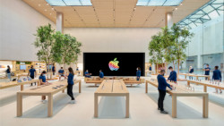

Tudo aquilo que você sempre quis saber sobre o mundo Tech, em um único lugar.
Hitória da Apple
Apple Inc. (anteriormente chamado de Apple Computer, Inc.) é uma empresa multinacional norte-americana que tem o objetivo de projetar e comercializar produtos eletrônicos de consumo, software de computador e computadores pessoais. Os produtos de hardware mais conhecidos da empresa incluem a linha de computadores Macintosh, iPod, iPhone, iPad, Apple TV e o Apple Watch.
Surge a empresa
A Apple foi fundada por Steve Wozniak, Steve Jobs e Ronald Wayne com o nome de Apple Computers INC., em 1976, na Califórnia. Com vendas anuais (no ano fiscal de 2006) em torno dos US$ 19,3 bilhões, e sediada em Cupertino, na Califórnia, a Apple desenvolve, vende e oferece suporte a uma série de computadores pessoais, reprodutores de mídia portáteis, software e hardware. Entre os produtos mais conhecidos da empresa estão a linha de computadores Mac, seu sistema operacional Mac OS X e a linha iPod de reprodutores de mídia portáteis. Para o iPod e seu programa, o iTunes, a Apple vende audiobooks, filmes, jogos, música, programas televisivos e videoclipes na sua iTunes Store, recentemente entrou no ramo de celulares com a criação do iPhone.
A empresa era conhecida por Apple Computer, Inc. pelos seus primeiros 30 anos de existência, mas retirou a palavra "Computer" de sua razão social em 9 de janeiro de 2007.A mudança de nome, que seguiu a introdução do smartphone iPhone e do sistema de vídeo digital Apple TV, é uma representante da contínua expansão da empresa em outros mercados além do seu foco tradicional em computadores.
A "Apple" também opera mais de 200 pontos de venda nos Estados Unidos, Japão, Reino Unido, Canadá e Itália. As lojas vendem a maioria dos produtos da empresa, assim como muitos produtos de terceiros e oferece suporte e consertos no local para seu hardware e software. A empresa emprega mais de 20 000 pessoas mundo afora, entre cargos permanentes e temporários.

Por uma variedade de razões, desde sua filosofia de design às suas raízes indie, assim como suas campanhas publicitárias, a Apple construiu uma reputação distinta na indústria de informática e eletrônicos e cultivou uma base de consumidores que é devotada de modo incomum à empresa e à sua marca. Na data de 24 de agosto de 2011 Steve Jobs anuncia oficialmente a sua renúncia do cargo de CEO da Apple e em 5 de outubro de 2011, falece.
Identidade
O primeiro logotipo da Apple, desenhado por Ron Wayne, retrata Sir Isaac Newton sentado sob uma macieira. Foi quase imediatamente substituído pelo "arco-íris Apple" de Rob Janoff, a agora conhecida silhueta cor de arco-íris de uma maçã com uma mordida. Janoff apresentou Jobs com vários temas monocromáticos diferentes para o logotipo "mordido" e Jobs imediatamente gostou dele. No entanto, Jobs insistiu que o logotipo deveria ser colorido para humanizar a empresa. O logotipo foi projetado com uma mordida para que não fosse confundido com uma cereja. As listras coloridas foram concebidas para tornar o logotipo mais acessível e para representar o fato de que o Apple II poderia gerar gráficos em cores. Este logo é muitas vezes erroneamente referido como uma homenagem a Alan Turing, com a marca de mordida uma referência ao seu método de suicídio. Tanto Janoff quanto a Apple negam qualquer homenagem a Turing no desenho do logotipo.